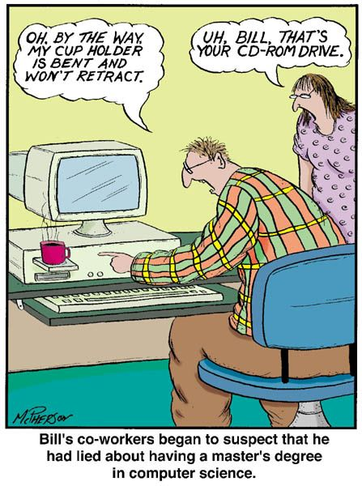

Teacher + Student = dumb and dumber
This content is derived from APC Magazine, November 2007.
Unexpected IT Classroom Stories
We had no idea there were so many dumb IT trainers and students out there.
The stories just keep coming in.
This content is derived from APC Magazine, November 2007.
We had no idea there were so many dumb IT trainers and students out there.
The stories just keep coming in.
David Tune of Boambee, NSW, was reminded of a particularly clever pair of IT Diploma students who handed in a joint research assignment, complete with the required signed statement that it was all their original work.
Tune recalls: "Upon reading the work for grading, I was incredibly impressed to find three pages of the document written in perfect technical German, particularly given that the students in question were none too articulate when I asked 'Sprechen sie Deutsch?'
End result: assignment rejected, students counselled and more care taken when cutting and pasting to cover assignment work.
Anyone attending an IT lecture should expect that the lecturer knows the subject. But IT lecturers are a funny lot.
Jun Li, a programmer, recalls working in IT support at a school.
"I was told to set up a projector in one of the meeting rooms for school staff, as there was a presentation. Having done that, I hooked the presentation laptop to the network and tried to help one of the speakers from the IT faculty update the laptop to IE7. I logged off and asked her to log on with her account to try IE7.
'What is that?' she asked when the IE7 install process asked whether phishing should be turned on. After I explained it, she told me that she was about to present a talk on internet security."
Neil Meyers, library assistant from Gilles Plains in SA, recalls an incident with a part-time computer lecturer a couple of years ago.
"I work in a vocational education library, and, on night shift, library staff are the default computer technicians/troubleshooters. One night, this part-time lecturer came to the counter, stating that she'd managed to get a CD-ROM disc stuck in the drive. She also said she felt a bit foolish, because she was instructing a class in basic computing and was unable to solve the problem in front of a room full of students.
So I wandered over to give her assistance, pushed the drive eject button, out popped the tray and... no disc to be seen.
Before I was able to ask out the obvious question, she piped up, 'That's the CD drive? I thought it was the other one!', pointing to an old 5.25in floppy disc slot, which was there even though the drives themselves had long since been decommissioned.
Someone from IT got out the disc the next day when they upended the machine and it fell out. Then, a week later, after I gave the lecturer her CD back, she was back within five minutes, saying, 'You won't believe it, I've done it again!'
And this was their computing tutor? So there I am in front of her class, shaking the heck out of the machine. So much for teaching people to handle their computers with care!"
Ian Caldewell, a self-styled 'PC tinkerer', refurbishes PCs, and has ways of acquiring modems, monitors, CPUs, boxes and RAM - to the point where it has become a pastime consuming most of his leisure time. He now has streams of people seeking repairs, advice and assistance.
"Recently, I replaced an old power supply for a couple, and, when they came to collect, they asked whether I made house calls.
I said I could and asked what they needed."
The lady told Caldewell she'd bought a new wireless mouse, and, since it was the last one on display, it didn't come with a box or instructions.
"I asked her: 'Did you put batteries in it?!' She hadn't, of course."
Chris Aitken, a designer and programmer from Camden, NSW, believes his story proves that tech support is one of the most stressful jobs on earth. He recalls working for a small internet provider in the late '90s, when one of the customers was a local police officer.
"He was also an expert in crashing Windows 98. On one occasion, he brought his tower into the office, sat it on the counter, pulled his service pistol out of his holster and pointed it straight at the tower, threatening to shoot it.
Another time he put his (by now very nervous) PC tower onto the counter, again took out his pistol, held it by the barrel and started banging the butt of the gun onto the top of the computer, quite hard too.
It's no wonder techies go grey - or bald - early!"
This is the first we've heard of someone trying to fix a computer by intimidating it.